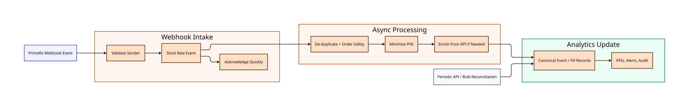

PrimeRx Webhook Processing Pipeline
Design for receiving PrimeRx webhook events safely, processing them asynchronously, suppressing PHI, and using them as near-real-time triggers for canonical data updates and starter dashboards.
Pipeline Position
Webhooks are the primary near-real-time trigger. They are not sufficient by themselves for initial historical load, missed-event recovery, daily reconciliation, or KPI rebuilds.
The full integration strategy is: webhooks for event awareness, API for enrichment and reconciliation, and SFTP/batch feeds for historical load, daily feed transfer, and KPI rebuilds after PrimeRx field specification and setup approval.
Current Diagram

Confirmed PrimeRx Webhook Facts
What PrimeRx Sends
- Near-real-time event notifications.
- JSON payloads with a common structure.
- An
Eventfield that identifies the business event.
What We Must Handle
- Webhook authentication.
- Duplicate deliveries.
- Out-of-order events.
What Is Still Needed
- API enrichment for full details.
- Bulk or API reconciliation.
- PHI suppression before canonical storage.
Relevant Events
The webhook guide lists several events. For canonical storage and dashboard readiness, group them into these business categories:
- Prescription lifecycle: saved, filed, billed, reversed, deleted.
- Claim exceptions: transmission rejected.
- Fulfillment: delivery, shipped, label printed.
- Workflow: verification completed, queue transition.
The sample vendor configuration mentions RxPickedUp, but the supported event table does not list it. PrimeRx should confirm whether pickup events are officially supported.
Processing Flow
- Receive the event and store it in the restricted ingestion area.
- Acknowledge receipt quickly so PrimeRx is not blocked by downstream processing.
- Process asynchronously: de-duplicate, minimize PHI, and enrich from the API if needed.
- Map the safe event into the canonical analytics model.
- Update KPIs, alerts, and audit records.
PHI Boundary
Webhook payloads can include patient name, DOB, address, phone, email, driver license, original prescription number, prescription notes, and other direct identifiers. Raw webhook data must be treated as PHI until transformed.
The canonical database should only receive HIPAA-minimized data. Direct patient identifiers should be excluded unless a later compliance decision explicitly allows a different model.
Idempotency And Ordering
The pipeline must assume duplicate and out-of-order events. At design level, we need a stable way to identify the same prescription event across retries and later corrections.
- Store or pharmacy identity.
- Prescription/fill identity.
- Event type and event timing, if available.
- Raw event fingerprint as a fallback.
Periodic API or bulk reconciliation is still required to correct missed, duplicated, or reordered webhook events.
Failure Handling
Invalid Events
- Reject or quarantine events that fail basic validation.
- Keep enough metadata for vendor troubleshooting.
Data Issues
- Route schema drift, unmapped fields, and PHI policy issues to review.
- Do not silently drop events that affect KPIs.
Recovery
- Retry temporary processing failures.
- Use API or bulk reconciliation to recover missed events.
PrimeRx Questions
- Can webhook payloads exclude PHI or direct patient identifiers?
- Is HMAC or signature validation supported?
- Does every webhook include a unique event ID?
- Does every webhook include an event-created timestamp?
- What retry schedule applies to failed deliveries?
- Can failed or missed webhook events be replayed?
- Are webhook schemas versioned?
- Can webhooks be configured per store or pharmacy group?
- Is
RxPickedUpofficially supported? - Can API or bulk export be used for daily reconciliation against webhook events?
Implementation Milestone
The first implementation should prove this path with sandbox or sample payloads:
- Receive billing, reversal, and rejection events.
- Persist raw events in the restricted ingestion area.
- Minimize PHI and map safe fields into canonical records.
- Update sample KPI and alert outputs.
- Reconcile webhook-derived data against API or bulk data once that channel is confirmed.